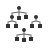
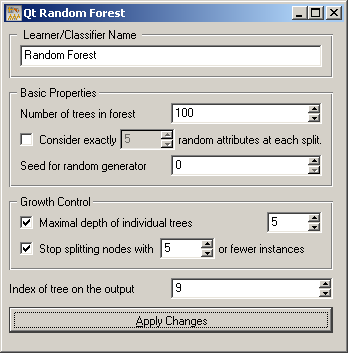
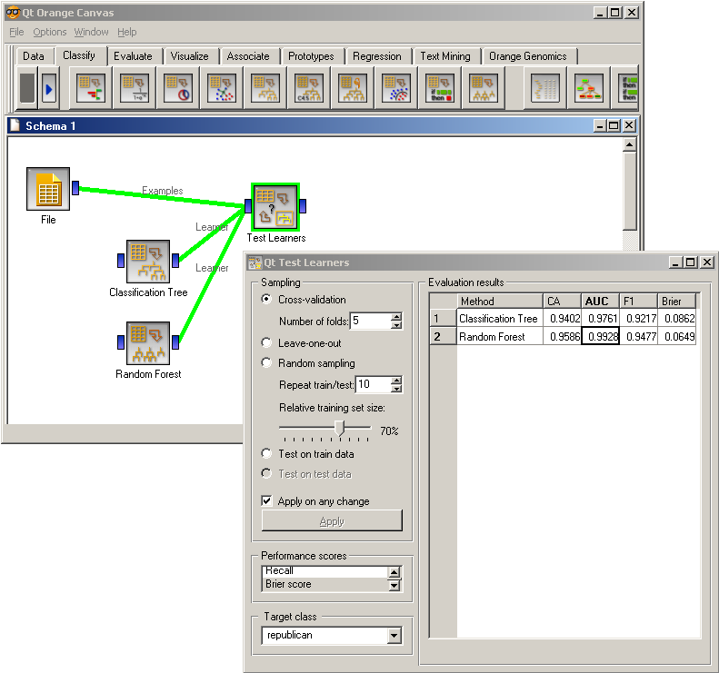

This is documentation for Orange 2.7. For the latest documentation, see Orange 3.
Random Forest¶
Random forest learner
Signals¶
- Inputs:
- Examples (ExampleTable)
A table with training examples
- Outputs:
- Learner
The random forest learning algorithm with settings as specified in the dialog
- Random Forest Classifier
Trained random forest
Description¶
Random forest is a classification technique that proposed by [Breiman2001], given the set of class-labeled data, builds a set of classification trees. Each tree is developed from a bootstrap sample from the training data. When developing individual trees, an arbitrary subset of attributes is drawn (hence the term “random”) from which the best attribute for the split is selected. The classification is based on the majority vote from individually developed tree classifiers in the forest.
Random forest widget provides for a GUI to Orange’s own implementation of random forest (RandomForestLearner). The widget output the learner, and, given the training data on its input, the random forest. Additional output channel is provided for a selected classification tree (from the forest) for the purpose of visualization or further analysis.
In the widget, the first field is used to specify the name of the learner or classifier. Next block of parameters tells the algorithm how many classification trees will be included in the forest (Number of trees in forest), and how many attributes will be arbitrarily drawn for consideration at each node. If the later is not specified (option Consider exactly ... left unchecked), this number is equal to square root of number of attributes in the data set. Original Brieman’s proposal is to grow the trees without any pre-prunning, but since this later often works quite well the user can set the depth to which the trees will be grown (Maximal depth of individual trees). As another pre-pruning option, the stopping condition in terms of minimal number of instances in the node before splitting can be set. Finally, if the training data is given to the widget, the Index of the tree on the output can be specified, instructing the widget to send the requested classifier.
Examples¶
Snapshot below shows a standard comparison schema of a random forest and a tree learner (in this case, C4.5) on a specific data set.
References¶
| [Breiman2001] | Breiman L (2001) Random Forests. Machine Learning 45 (1), 5-32. (PDF) |